正しいオブジェクトから始めます
チャットは主となるオブジェクトから始まります。最近開いたもの、または名前から探したものです。候補が複数あるときは推測せずボタンで確認し、あとから切り替えられます。
いま開いている Google スプレッドシート™ の横に表示されるサイドパネルです。すでにサインインしている Salesforce 組織につながり、オブジェクト・リストビュー・自分で書いた SOQL・レポートをワークシートに取り込み、確認したレコードの変更を書き戻せます。開発者が運用するバックエンドはなく、Apps Script のインストールも不要です。
SheetConnect は独立した製品であり、Salesforce および Google とは提携・承認・後援の関係にありません。
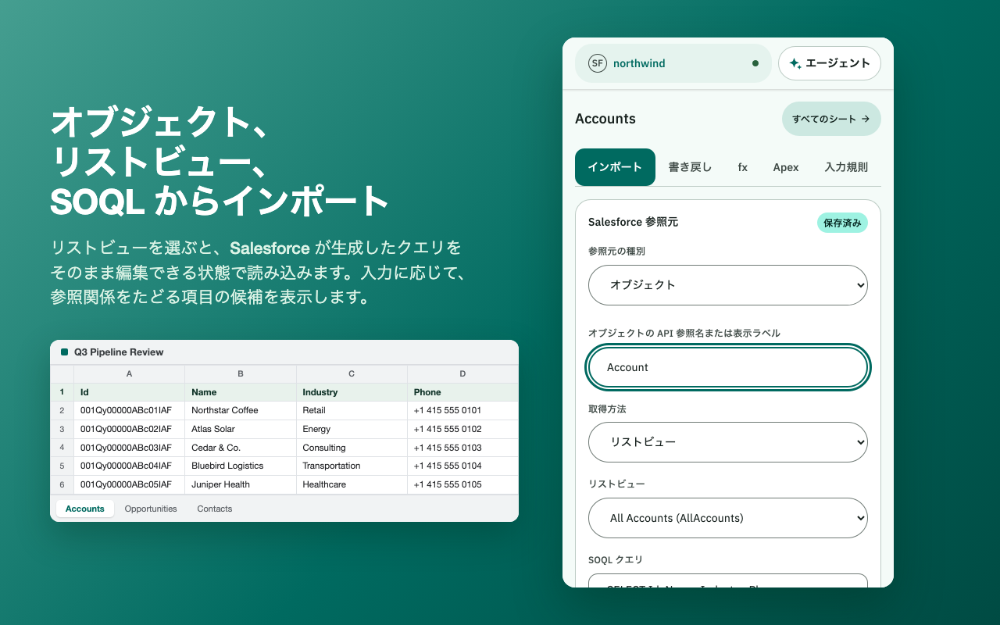
ツールの横に置かれる任意のチャットで、オンにするまでは無効です。「今四半期に完了予定の未完了の商談をインポートして」「取引先名の横に ID を入れて」のように頼むと、エージェントがオブジェクトと項目を探し、クエリや数式をシートに対して確認し、作業をチャット内のカードとして用意します。「実行」を押すまで何も実行されず、Salesforce への書き込みはこれまでどおり確定を待ちます。
チャットは主となるオブジェクトから始まります。最近開いたもの、または名前から探したものです。候補が複数あるときは推測せずボタンで確認し、あとから切り替えられます。
インポート、参照と集計、書き戻し、入力規則、Apex は、どれもまずシートに対して確認したうえでカードとして届きます。実行するのはあなたで、エージェントが実行することはありません。
/import・/lookup・/update・/check がよく使う作業を案内し、自分のスキルを作ることもできます。
読み取るのは名前・表示ラベル・件数です。レコードやセルの値は送信されず、Salesforce のセッションと Google へのアクセス権はブラウザーの外に出ません。
5 時間ごと・30 日ごとに更新される利用枠の範囲で無料です。利用枠は変更されることがあります。
日本語でも英語でも、書いた言葉のまま答えます。組織の表示ラベルを読みながら探します。
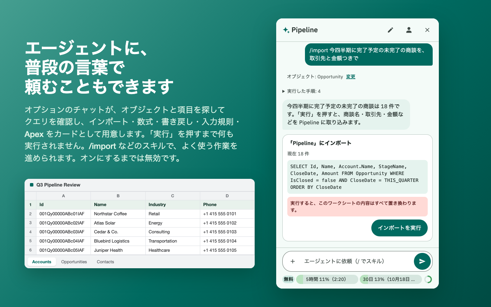
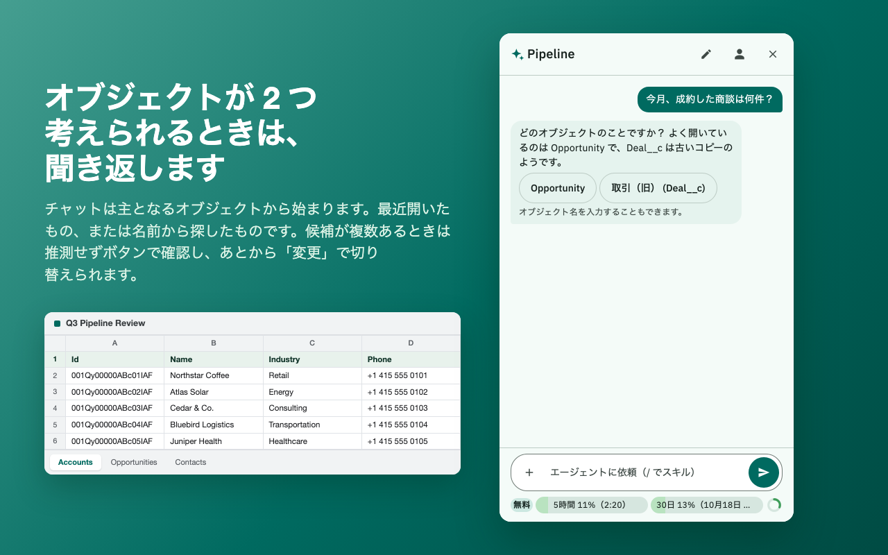
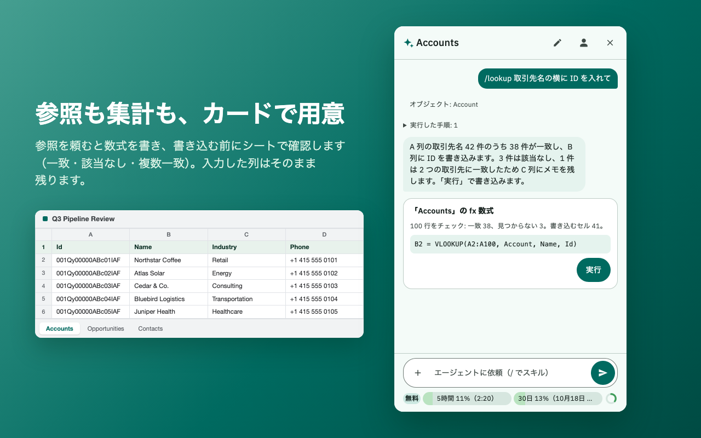
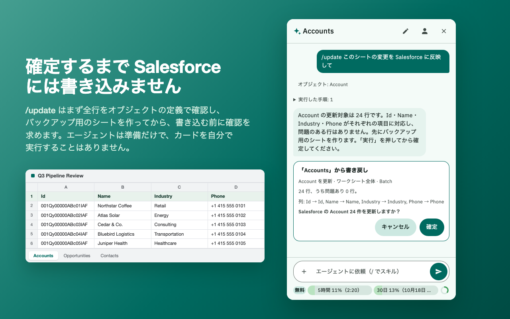
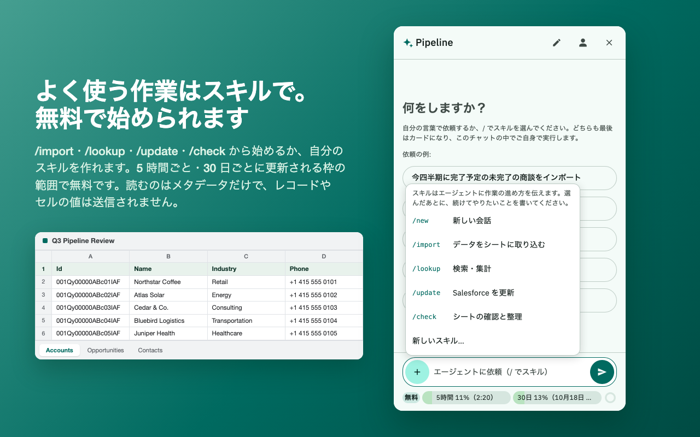
任意の Salesforce オブジェクトを選び、リストビューからインポートできます。項目の候補は参照関係のパスも含めて入力中に表示されます。
リストビューでは形が合わないときは自分でクエリを書き、その結果を選んだワークシートにインポートできます。
ID、名前、API 参照名、フォルダーからレポートを探し、必要なものをインポートできます。
グループ化、集計、小計、総計をそのまま取り込みます。詳細行はその実行にだけ含めることができ、Salesforce 側のレポートは変わりません。
オブジェクトのインポートは結果のページをすべてたどるので、大きなクエリでも最初のバッチで打ち切られません。
ワークシートがそのまま入力表になります。データ範囲を指定すれば、実行の対象を選んだ行と列だけに絞れます。
見出しは項目の API 参照名または一意な表示ラベルに対応付けられ、権限、必須項目、データ型、見出しの重複、ID の接頭辞をすべて事前に確認します。
1〜200 行ずつのリクエストで送り、1 行の失敗でそのリクエストを取り消すかどうかを選べます。すべてを 1 つの Bulk API ジョブとして送れば、パネルを閉じても処理が続きます。実行のたびに、変更する値と元に戻す手順をバックアップ用のシートに先に保存し、削除したレコードはごみ箱から復元できます。
列の値を Salesforce で参照し、見つかった値を指定した項目ごとに 1 列ずつ隣に書き込みます。入力した列は書き換えません。該当なしの行はその旨を、複数のレコードに一致した行は最新のものと残りの一覧のメモを書き込みます。
各行の子レコードの件数や合計を求めます。集計クエリは行ごとではなく列ごとに 1 回で、条件も指定できるので、合計が聞きたかったことに答えます。
ほかの 3 つのツールで足りないときは、選択範囲に対して匿名 Apex を実行できます。範囲は input として渡され、output に入れた内容が書き戻されます。input を変更した内容もシートに書き戻されます。実際の組織でコンパイルを確認済みの 27 種類のテンプレートから始められます。
パネル全体が両方の言語に対応し、日本語は Salesforce 自身の用語を使います。日本語のブラウザーでは日本語で開き、パネル上部の切り替えでどちらにも変えられます。
組織、ワークシート、取得元または操作、そして実行が触れてよいデータ範囲を選びます。
実行の前に、見出しと項目の対応付け、レコード数・エラー数・リクエスト数を確認します。
どの実行も、組織・オブジェクト・ワークシート・操作・レコード数を示して、あなたを待ちます。唯一の例外は Apex で、パネルはボタンそのものにそう書いています。一度押すと Salesforce でコードが実行され、返ってきた値がそのままワークシートに書き込まれます。
結果のステータス列は任意で、既定ではオフです。オンにするとデータの後ろに挿入され、後ろの列は上書きされずに右へずれます。
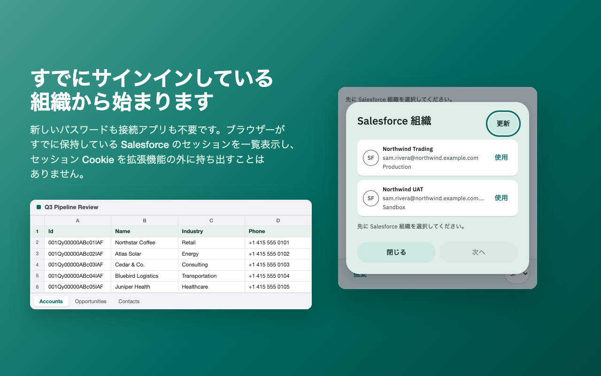
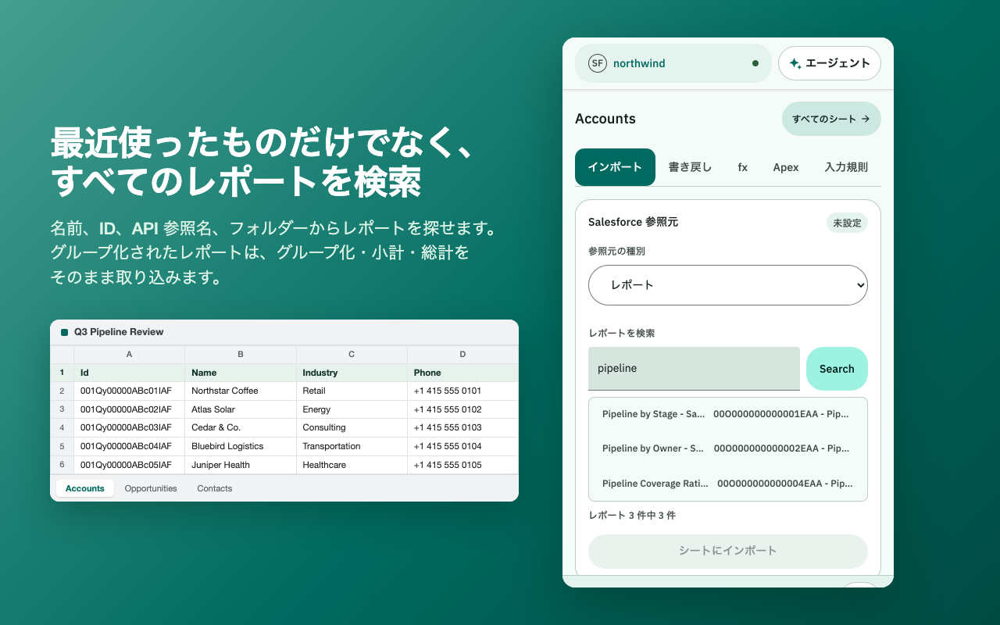
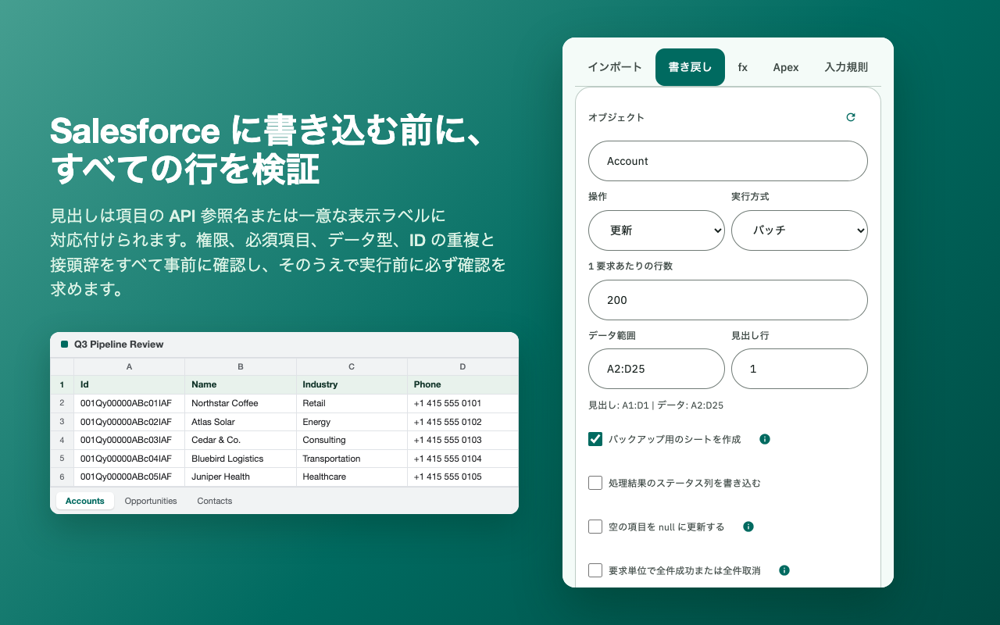
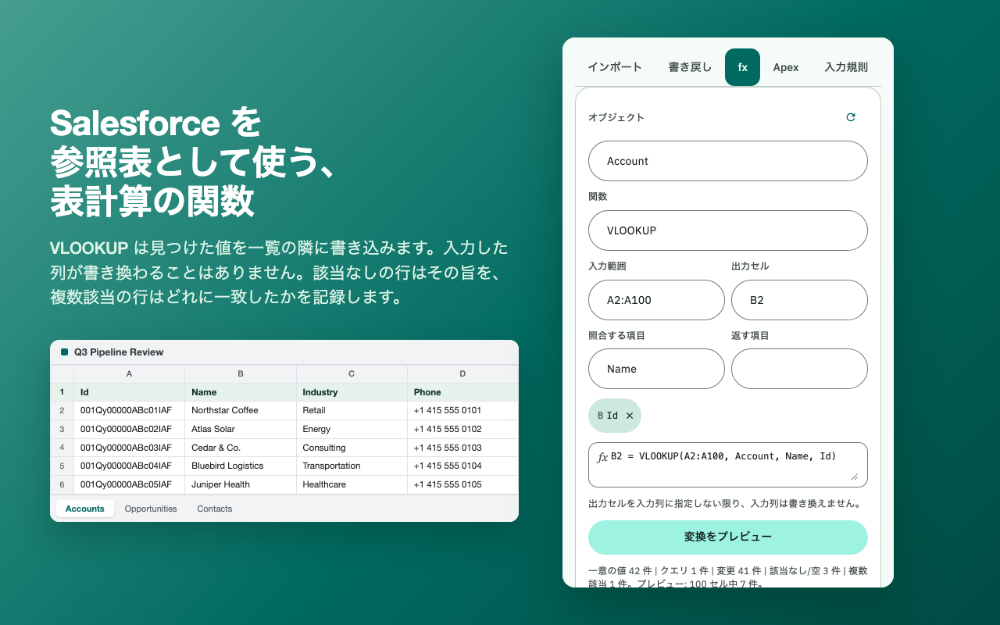
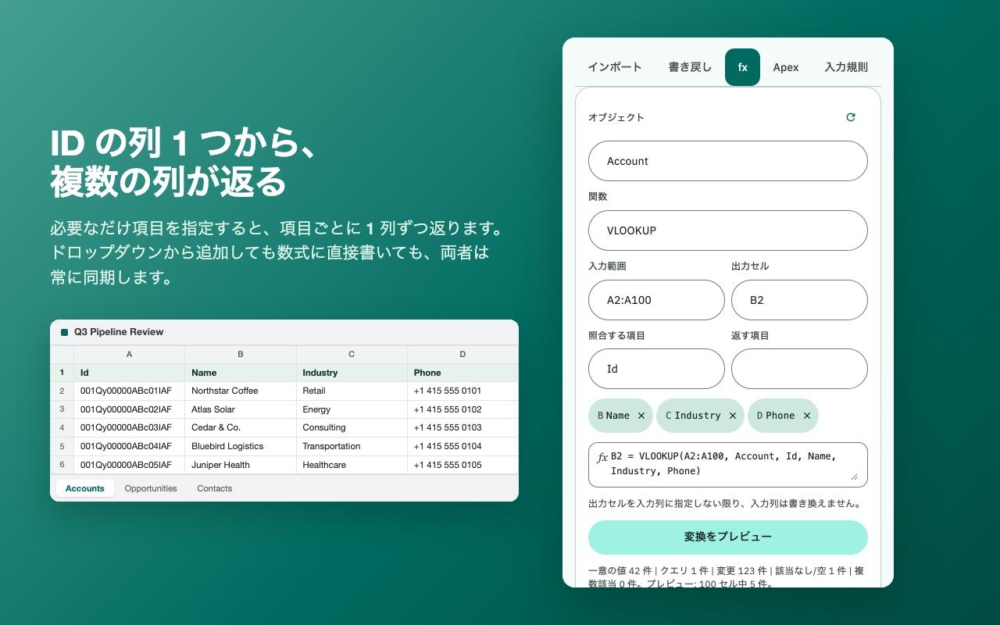
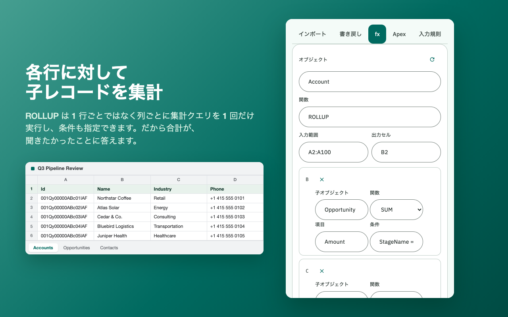
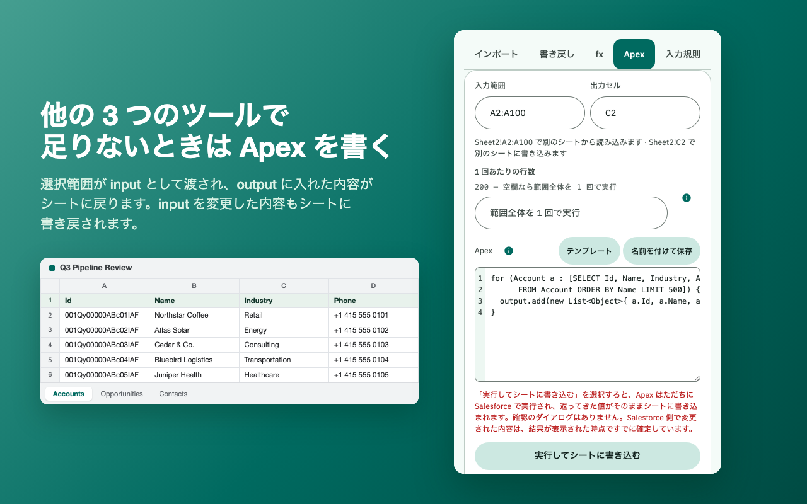
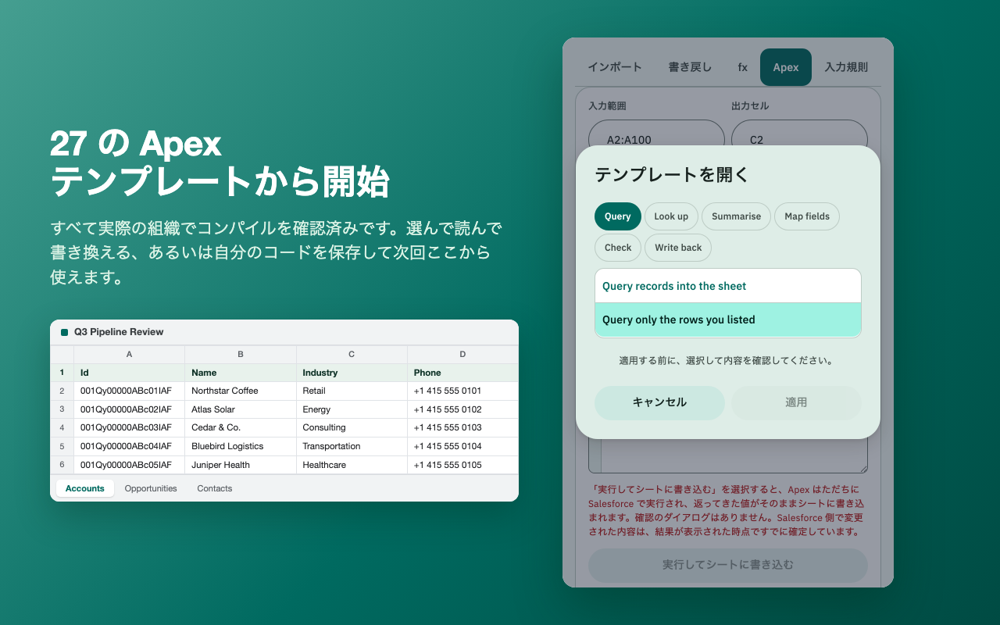
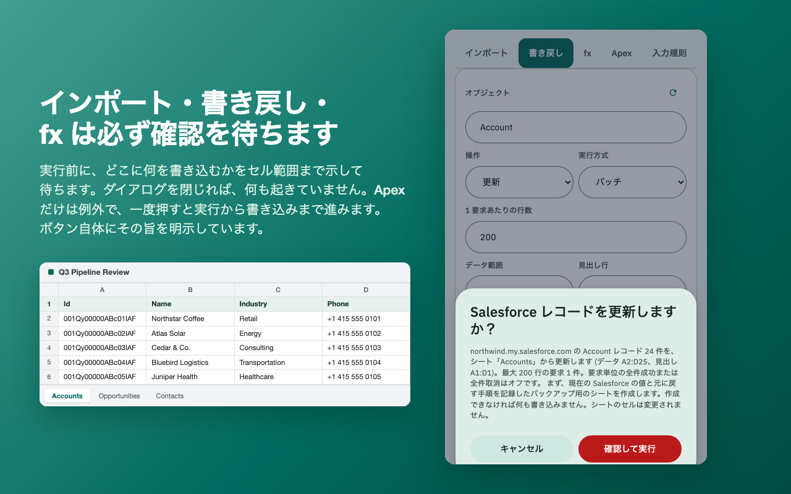
どの画像も、出荷されるサイドパネルをそれ自身のコードで動かして撮影したものです。レコードは架空のもので、実在の Salesforce 組織、Google アカウント、顧客のデータは含まれていません。
インストール時に許可されるのは Salesforce へのアクセスだけです。Google へのアクセスは、あとから別に決めます。
cookies: 既存の Salesforce の sid Cookie をブラウザー内で読み取り、サインイン中の組織の一覧表示と、依頼された API 呼び出しの認証に使います。identity: 「Google に接続」を選んだあとにだけ、Google Sheets API 用に Chrome が管理する Google OAuth トークンを取得します。求める Google OAuth スコープは https://www.googleapis.com/auth/drive.file だけで、Google 自身のファイル選択画面であなたが渡したスプレッドシートにしか届きません。sidePanel: 開いているスプレッドシートの横に画面を表示します。storage: 選んだ組織、組織ごと・ワークシートごとの取得元の設定（最新 80 件）、名前を付けて保存した Apex（最大 50 件）、開いたスプレッドシートの名前（最新 30 件、セルの値は含みません）、非表示にしたセッションの SHA-256 フィンガープリント（最大 50 件）を記憶します。tabs: ツールバーのボタンを Google スプレッドシートのタブでだけ有効にし、読み書きのたびに、そのワークシートがアクティブなタブでまだ開いていることを確認します。バージョン 0.9.0 は Chrome ウェブストアで公開中で、どなたでもインストールできます。Apex ツールが加わり、Convert が VLOOKUP と ROLLUP を備えた fx になりました。リリースするビルドはすべて、パッケージ化の前に単体テスト、ソースの検証、アーカイブの検証に合格しています。サインイン、インポート、Salesforce のレコード更新は実在の Salesforce 組織と Google アカウントで一通り動作を確認し、ROLLUP が発行する集計クエリもその後、実際の組織で確認しました。
バージョン 0.10.0 は準備済みで、まだ申請していません。クエリを使わずに選択リストを変換する LABEL と VALUE が加わり、書き戻しのリクエストの大きさを 1〜200 行で選べるようになります。大量データはこれまでどおり 1 つの Bulk API ジョブで送ります。実行のたびに変更する値をバックアップ用のシートに先に保存でき、削除したレコードは「復元」で戻せます。挿入・更新・アップサート・削除は実際の組織で確認しました。
Google の OAuth 同意画面は本番環境で公開中ですが、求めているスコープについての Google の確認はまだ完了していません。本番環境というのは OAuth の公開ステータスのことで、それだけで Google の確認済みアプリになるわけではありません。確認が完了するまでは、Google アカウントを接続するときに Google の「未確認のアプリ」の画面が表示され、承認できるアカウントの数にも上限があります。プライバシーポリシー（英語）は公開済みです。
Google への認可は、ドライブ内のすべてのスプレッドシートに届く https://www.googleapis.com/auth/spreadsheets から、Google 自身のファイル選択画面であなたが渡したスプレッドシートにしか届かない https://www.googleapis.com/auth/drive.file に絞りました。この変更はリリース済みで、公開中の拡張機能が求めるスコープは drive.file だけです。拡張機能が見られる範囲を狭める変更で、広げるものではありません。
この製品は開発中は DinaConnect という名前で、リリース前に SheetConnect に改名しました。ストアの下書きのアイテムは旧名で作成されていますが、マニフェストのキーで拡張機能の ID が固定されているため、パッケージをアップロードするとその場で名前が変わります。